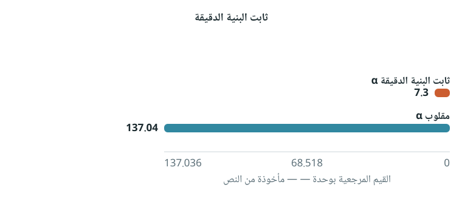

ثابت البنية الدقيقة
Fine-structure constant
ثابت البنية الدقيقة α هو مقياس قوة التفاعل الكهرومغناطيسي بلا وحدة: α = e²/(4πε₀ħc) ≈ 1/137.036. قيمته من CODATA 2022 هي 7.297 352 5643×10⁻³، ويحدد حجم انشقاق مستويات الطاقة الذرية في البنية الدقيقة.
α يحدد شدة اقتران الإلكترون بالمجال الكهرومغناطيسي، ومنه تأتي تسمية «البنية الدقيقة»: تصحيحات مستويات الطاقة الذرية التي تنتج عن الحركة النسبية وعن العزم المغزلي. وα عدد بلا وحدة، أي أن قيمته لا تعتمد على نظام الوحدات. مثال: سرعة الإلكترون في الحالة الأرضية للهيدروجين في نموذج بور تساوي α·c = 7.297×10⁻³×2.998×10⁸ = 2.188×10⁶ m/s، أي نحو 0.73% من سرعة الضوء، وهذا هو سبب صغر التصحيحات النسبية.
كيف تعمل الظاهرة؟
الإلكترون المشحون يتبادل فوتونات افتراضية مع النواة ومع الفراغ الكهرومغناطيسي. وشدة هذا التبادل تحددها الشحنة الأولية e، وتُقاس نسبة هذه الشدة إلى مقياس الحركة الكمومية ħc بالثابت α. ولهذا يظهر α في كل تصحيح: في الحركة النسبية، وفي العزم المغزلي، وفي الاستقطاب الفراغي، وفي انبعاث الفوتونات. وقيمة α الصغيرة هي ما يجعل الحسابات الاضطرابية في الكهرومغناطيسية دقيقة جداً.
العلاقة بالأرقام
α = e²/(4πε₀ħc) = 7.297 352 5643×10⁻³، و1/α = 137.035 999 084. وطاقة ريدبرغ = α²·m_e·c²/2 = 13.6057 eV. وسرعة الإلكترون في المدار n: v = α·c/n. مثال: v₁ = 2.188×10⁶ m/s، وv₂ = 1.094×10⁶ m/s. والتصحيح النسبي للطاقة من الرتبة α² ≈ 5.3×10⁻⁵.
مفاهيم متقاربة
يُفرَّق بين α وثابت الاقتران القوي α_s: الأول 1/137 والثاني نحو 0.118 عند كتلة Z. ويُفرَّق بين α وثابت البنية فائقة الدقة: الثاني يشمل تصحيحات إضافية من الرتبة α⁴. ويُفرَّق بين α المقيسة من عزم الإلكترون المغناطيسي وα المقيسة من ارتداد الذرات: تطابقهما اختبار للاتساق. وأخيراً يُفرَّق بين α في الفراغ وα في وسط مادي، حيث تتغير الأخيرة بسبب الاستقطاب.
حدود التطبيق
α ثابت في الفراغ عند طاقة منخفضة، لكنها «تجري» مع الطاقة: عند كتلة Z تبلغ 1/128 تقريباً. ولا تصف α التفاعل الكهرومغناطيسي في المواد الصلبة حيث تُستبدل بالثابت الفعال الذي يشمل استقطاب الوسط. ولا تُستعمل α وحدها في حساب أطياف الذرات الثقيلة، حيث يلزم حل معادلات ديراك كاملة. وأخيراً لا تفسر α أصل قيمتها: لا توجد نظرية مقبولة تفسر لماذا تساوي 1/137.

| الكمية | القيمة | المصدر |
|---|---|---|
| ثابت البنية الدقيقة α | 7.297 352 5643×10⁻³ — | [1] |
| مقلوب α | 137.035 999 084 — | [1] |
| سرعة الإلكترون في الحالة الأرضية | 2.188×10⁶ m·s⁻¹ | [1] |
المصادر
- 1 CODATA Value: fine-structure constant — NIST — CODATA 2022 recommended values (2024). physics.nist.gov/cgi-bin/cuu/Value?alph · اطُّلع عليه 2026-11-22
- 2 CODATA Value: Rydberg constant — NIST — CODATA 2022 recommended values (2024). physics.nist.gov/cgi-bin/cuu/Value?ryd · اطُّلع عليه 2026-11-22
- 3 CODATA Value: Bohr radius — NIST — CODATA 2022 recommended values (2024). physics.nist.gov/cgi-bin/cuu/Value?bohrrada0 · اطُّلع عليه 2026-11-22
استشهد بهذا المصطلح
الصيغتان مبنيتان من بيانات الصفحة نفسها: العنوان والتاريخ ورابط النسخة المنشورة.
ثابت البنية الدقيقة — Fine-structure constant. (2026). ديوان المعرفة — انفراد. https://infiradev.com/diwan/terms/term-fine-structure-constant.html
@misc{term-fine-structure-constant2026,
title = {ثابت البنية الدقيقة},
titleaddon = {Fine-structure constant},
howpublished = {{ديوان المعرفة — انفراد} — مرجع علمي عربي},
year = {2026},
url = {https://infiradev.com/diwan/terms/term-fine-structure-constant.html},
urldate = {2026-11-26},
note = {مراجعة علمية: hermes (مراجعة معتمدة 2026-11-26)}
}
راجعه: hermes (مراجعة معتمدة 2026-11-26) · 2026-11-26 · آخر تحديث 2026-11-22